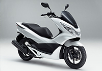

About Honda Motorcycle
|
To bring everyone the Joy and Freedom of MobilityAfter World War II, the use of auxiliary engines mounted on bicycles spread quickly in Japan, making it easier for people to move around and transport goods. This was the starting point of manufacturing for Honda. Ever since, Honda has given shape to wide-ranging joys and the fun of riding on two wheels, through such products as the Super Cub, which went on to become the standard in commuter models, and the Dream CB750 Four, which triggered an unprecedented sports bike boom across Japan. Making motorcycles with the basic goal of bringing joy and satisfaction to people serves as the starting point of Honda. |
Product History
From 1949 to 2014
Expanding our Manufacturing Network across the World
With the vision of “bringing the convenience and fun of a motorcycle to as many people as possible,” Honda made an early start in the sales and production of motorcycles outside of Japan, and then quickly expanded its international operations. According to the principle of “building products close to the customer,” we have developed manufacturing operations globally that are rooted in each country and region. In recent years, Honda has introduced a new manufacturing approach in emerging coun- tries, building plants with simple facilities in a short timeframe and conducting only final assembly there. In this way, we have started mass production of the CD80 in Bangladesh and the Ace CB125 in Kenya. In September 2014, Honda achieved cumulative global production of 300 million motorcycles.
Bringing the fun of small motorcycles to the next era and beyond
|  |
A large number of people around the world currently ride Honda’s small motorcycles. We are now installing on a wide range of models the “eSP” engine, our new-generation global engine that achieves both excellent riding performance and fuel efficiency. Honda will continue expanding our lineup by offering a succession of new models demonstrating unique individual character that are also environmentally-responsible, such as the PCX with its cutting-edge styling design and the Tact scooter that is very practical for daily use. |
Honda creates a new world of motorcycles
Featuring a new concept, the NM4 was developed under the themes of “Neo-futuristic” and “cool,” and is now manufactured at Kumamoto Factory and sold in Japan, North America and Europe. Thinking outside the box in constant pursuit of creating new products that previous generations could only imagine, Honda continues to pass on the joy of motorcycle riding to the next generation and the ones to follow..